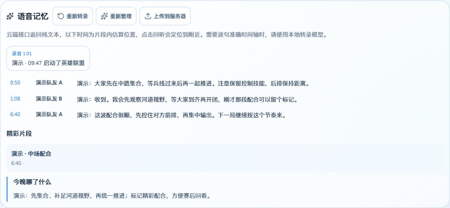
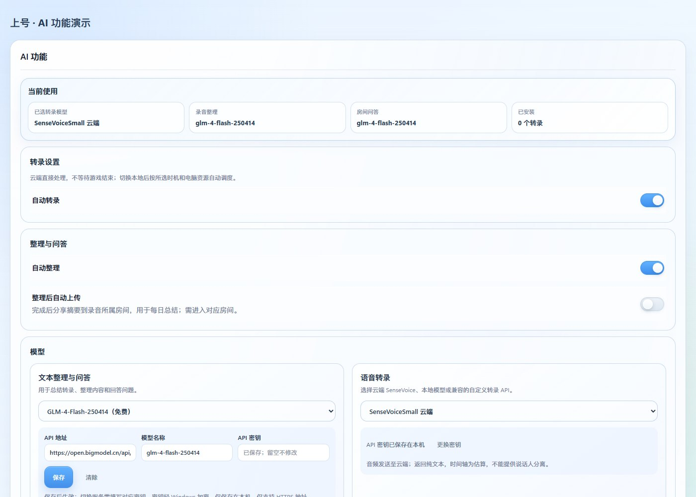
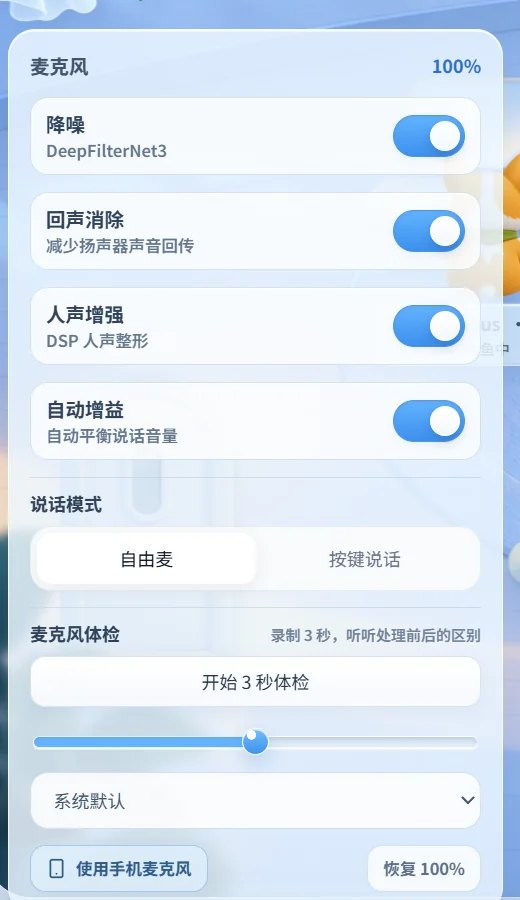
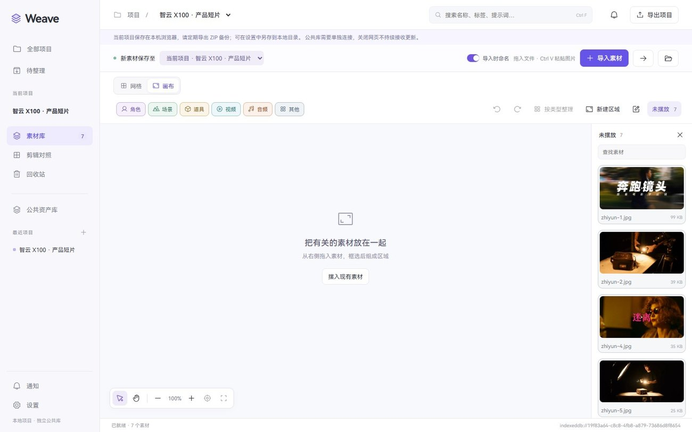
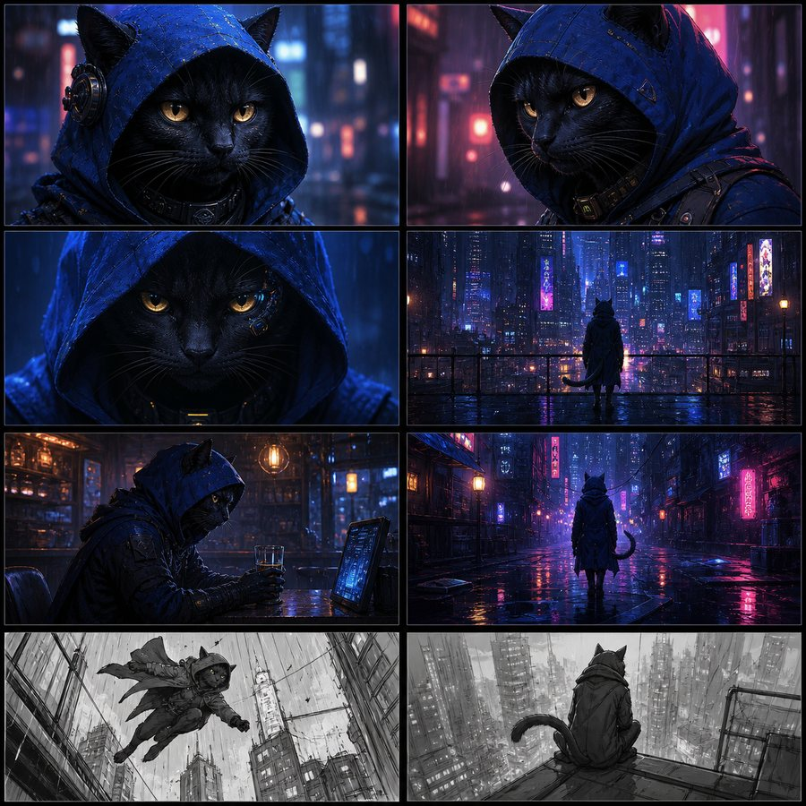
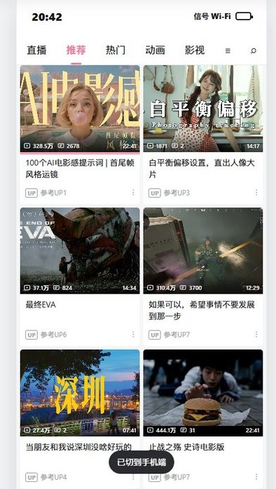
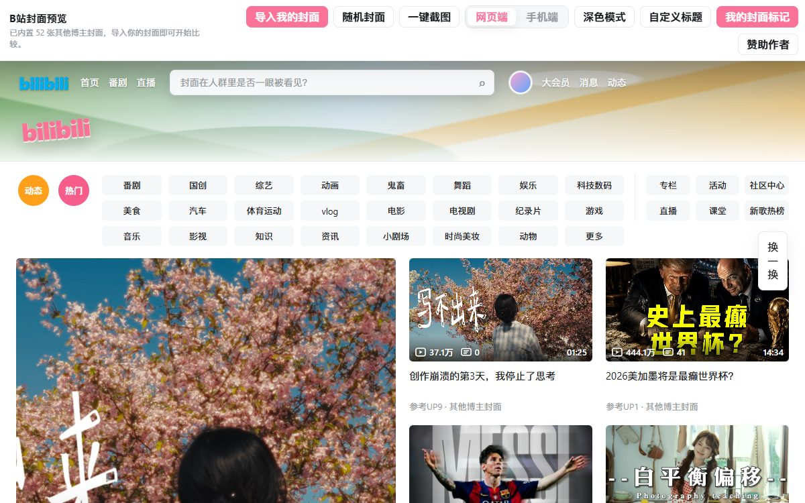
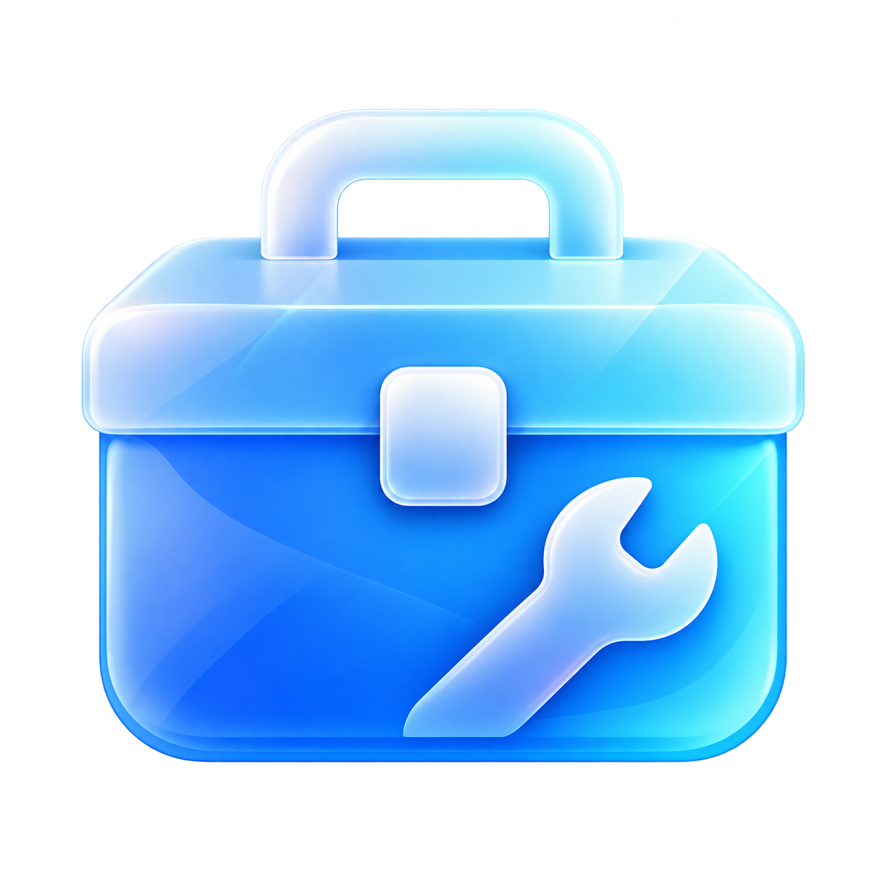

深圳市绿联进出口贸易有限公司（绿联）
工作内容整理中。
工作内容整理中。
依托 @青年派 自有账号矩阵，参与精品视频内容的策划与制作，内容以年轻人兴趣与圈层文化为核心导向。负责内容的视频拍摄与剪辑工作，强化整体内容质感与调性统一，相关内容获得稳定播放表现。
基于巴西市场用户偏好，对 TikTok BR 热点内容、热门音乐、标签趋势及竞品账号结构进行持续拆解，判断有效内容形式与视觉表达方向。将洞察结果转化为可执行的选题方向、优化内容结构。
面向 TikTok 巴西市场，负责短视频内容制作，围绕不同产品类型与使用场景，优化镜头语言、画面节奏与卖点呈现方式，提升视频完成度与整体质感。
熟练使用 ChatGPT / Runway / TopView / Sora 等生成式工具，辅助创意发散、画面素材与脚本构思。将 AI 应用于卖点提炼、脚本 / 分镜生成、素材补充与粗剪结构输出等关键环节。
基于扣子搭建多节点 AI 工作流，实现内容生产关键环节的标准化与半自动化协作。
负责品牌官号 @智云（抖音 / 视频号）及其渠道号的内容策划与制作，围绕摄影配件产品的功能卖点与使用场景创作高质量短片。内容类型覆盖产品教程 / 创意短片 / 行业干货。
建立并维护内容选题库与脚本模板，将有效内容结构沉淀为可复用方法论，使团队日均稳定产出 2 条高质量内容。
深度参与核心新品 X100 RGB 的内容营销，围绕灯光核心卖点制定内容方向，输出创意短片与种草内容十条。
协同 50+ 位影像 / 摄影领域达人进行内容共创，负责 brief 沟通、分镜指导与成片审核，确保内容质量与品牌表达一致。
深度参与品牌营销活动，制定内容标准，协助 Top 级创作者完成视频内容创作。
围绕产品功能与使用场景，针对高反光金属、全透明玻璃、强吸光面料等复杂材质，制定差异化布光与拍摄方案，强化产品质感与核心卖点呈现。
对接运营与设计团队，将产品卖点与业务需求转化为可落地的视觉内容方案。
主导赛前 5 支创意预热短视频制作，多平台矩阵宣发累计 10 万+ 播放，助力赛事门票预售。
负责关键节点直播主摄像（抖音直播售票、球星同游黄鹤楼等），保障直播画面稳定输出。
直播内容被湖北卫视、长江云新闻等平台采纳同步转播，最终全网曝光超千万级。
官方抖音账号 @横店影视节 的内容制作。完成包括创意短视频策划、电视剧花絮剪辑在内的多项视频制作任务。
负责抖音 / 微博 / 小红书 / 公众号矩阵的内容策划与剪辑包装，并执行粉丝互动。
独立策划剪辑覆盖黄明昊、王鹤棣 104 位知名明星艺人的宣传短视频，相关内容累计超百万曝光。
负责原创 MV 的策划、《YOUNG 武设青年》的摄制与后期制作。
作品先后被人民网、新华网、中国青年报、学习强国等顶级央媒平台主动转载报道。
全网跨平台累计总浏览量突破 600 万+。
获省级广电媒体颁发的「最佳视效奖」「优秀内容创作者」等奖项。
中国大学生广告艺术节学院奖中，累计 7 次入围并斩获「企业奖·优秀类」等奖项。
校期间多次获评「优秀学生干部」「突出贡献奖」「先进个人」等荣誉。
六个自己写、自己也在用的工具。起点都一样：先用，发现哪一步不顺手，再决定要不要动手。
给固定朋友长期挂语音、开黑和聊天的桌面语音房。
现成的语音软件不是给公会做的，就是给会议做的，没人管「一群朋友整晚挂在一起」这件小事。上号把房间当成场景来做：谁在打游戏、谁走开了、昨晚聊了什么，都在同一个画面里。



把散在十几个文件夹里的素材，收成一个找得到的项目。
剪辑之前最耗时的不是剪，是找。Weave 把素材库、自由画布和剪辑对照放进同一个项目：素材按角色、场景、道具、视频、音频归类，画布上按思路摆放，文稿和素材逐段对齐。


用自己的声音，把长稿念完。
配音的门槛不在模型，在流程：一段一段试、一句一句改、失败了从头再来。声作把长稿配音做成可以续的任务——句子级进度、后台排队生成、只重做改动过的那几句。
封面好不好，放进推荐流里才知道。
封面躺在文件夹里和在推荐流里是两个东西——尺寸被压、旁边全是别人的脸。这个工具把封面放进近似 B 站首页和手机端的版式里，直接看它抢不抢眼。


让 Windows 更好看，也更好用。字体、右键菜单、任务栏、窗口材质和开始菜单收在一个界面里；改之前先备份，能撤销、能一键还原，点叉号缩到托盘继续生效。

极简 Windows 工具箱。首页把清理、空间、体检、网络、开机等九类检查一次跑完，看完结果再决定执行哪些；清理只扫白名单，个人文件走回收站。
截图取自软件实际运行界面；其中的房间成员、录音与项目素材为演示数据。